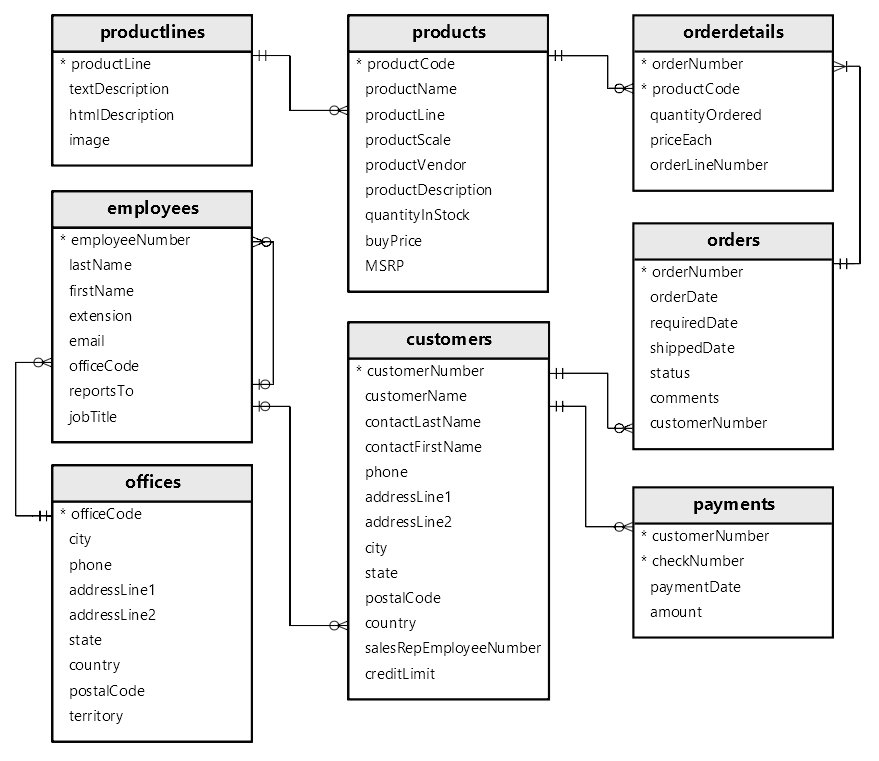

Procedimientos almacenados
Procedimientos almacenados (mariadb.com)
Tutorial procedimientos almacenados (mysqltutorial.org)
MySQL Stored Procedure (javatpoint.com)
Para seguir el tutorial de www.mysqltutorial.org descargaremos la siguiente:
Base de datos de muestra 
Ejercicio: Convierte el diagrama E-R de tablas anterior en un diagrama E-R de entidades.
Tutorial
Section 1. Basic MySQL Stored procedures
- Introduction to MySQL stored Procedures – introduce you to MySQL stored procedures, their advantages, and disadvantages.
- Changing the default delimiter – learn how to change the default delimiter in MySQL.
- Creating new stored procedures – show you how to create and use the
CREATE PROCEDUREstatement to create a new stored procedure in the database. - Removing stored procedures – show you how to use the
DROP PROCEDUREstatement to drop an existing stored procedure. - Variables – guide on you how to use variables to hold immediate results inside stored procedures.
- Parameters – introduce you to various types of parameters used in stored procedures including
IN,OUT, andINOUTparameter. - Altering stored procedure – show you step by step how to alter a stored procedure using a sequence of
DROP PROCEDUREandCREATE PROCEDUREstatements in MySQL Workbench. - Listing stored procedures – provide you with some useful commands to list stored procedures from databases.
Section 2. Conditional Statements
- IF statement – show you how to use the
IF THENstatement in stored procedures. - CASE statement – introduce you to the
CASEstatements including simpleCASEand searchedCASEstatements.
Section 3. Loops
- LOOP – learn how to execute a list of statements repeatedly based on a condition.
- WHILE Loop – show you how to execute a loop as long as a condition is true.
- REPEAT Loop – show you how to execute a loop until a search condition is true.
- LEAVE statement – guide you on how to exit a loop immediately.
Section 4. Error Handling
- Show Warnings – Learn how to display errors and warnings of the latest query execution.
- Show Errors – Learn how to display errors of the latest query execution.
- DECLARE … HANDLER – Show you how to declare exit or continue handler to handle errors within stored procedures.
- DECLARE … CONDITION – Guide you on how to associate a name with a condition specified by a MySQL error code or an SQL state value.
- SIGNAL – Learn how to raise an exception (error or warning) using the
SIGNALstatement. - RESIGNAL – show you how to re-raise an exception using the
RESIGNALstatement.
Section 5. Cursors
- Cursors – learn how to use cursors to process row by row in a result set.
- Prepared Statements – guide you on how to use prepared statements to make your queries more secure and faster to execute.
Section 6. Stored Functions
- Creating a stored function – show you how to create stored functions in the database.
- Removing a stored function – use the
DROP FUNCTIONstatement to remove a stored function. - Listing stored functions – learn how to list all stored functions in the database by using the
SHOW FUNCTION STATUSstatement or querying from the data dictionary.
Section 7. Stored Program Security
- Stored object access control – learn how to control the security of the stored objects.
Section 8. Transactions
- Transactions – guide you on how to use transactions in stored procedures to ensure data integrity.